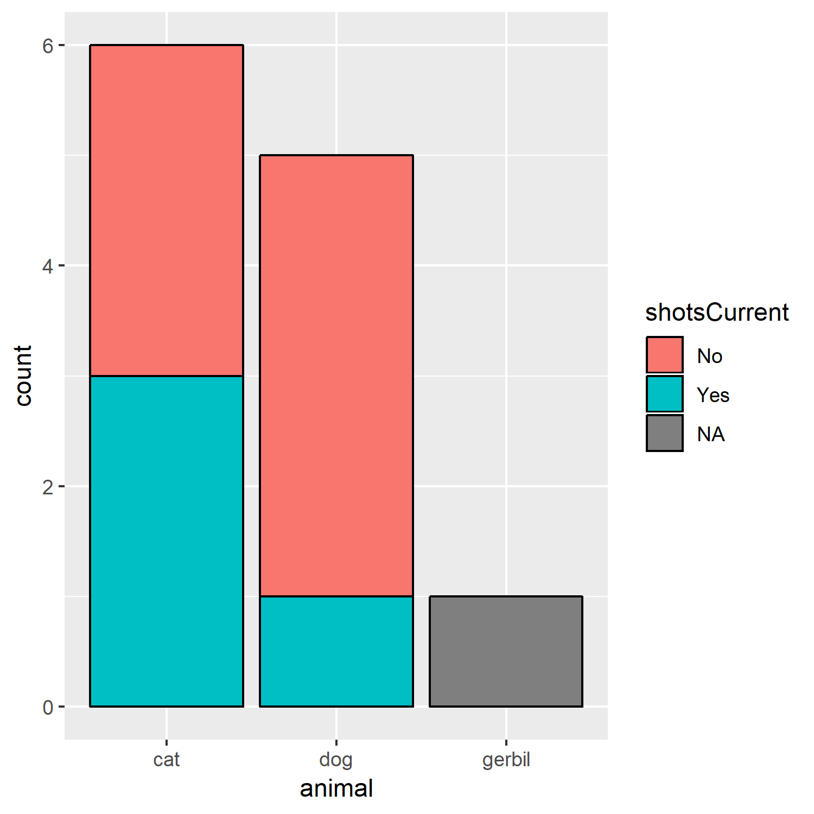

#| setup: true
#| echo: false
#| exercise:
#| - ex_1
#| - ex_2
#| - ex_3
#| - ex_4
#| - ex_5
#| - ex_6
#| - ex_7
#| - ex_8
library(ggplot2)
library(dplyr)
pets <- read.csv("https://raw.githubusercontent.com/laderast/RBootcamp/master/data/pets.csv")
pets$ageCategory <- factor(pets$ageCategory, ordered = TRUE)
pets$animal <- factor(pets$animal)
pets$name <- factor(pets$name)
pets$shotsCurrent <- factor(pets$shotsCurrent)3 {ggplot2} and categorical data
3.1 factor variables
#| edit: false
#| echo: false
library(ggplot2)
library(dplyr)
pets <- read.csv("https://raw.githubusercontent.com/laderast/RBootcamp/master/data/pets.csv")
pets$ageCategory <- factor(pets$ageCategory, ordered = TRUE)
pets$animal <- factor(pets$animal)
pets$name <- factor(pets$name)
pets$shotsCurrent <- factor(pets$shotsCurrent)Factors are how R represents categorical data.
There are two kinds of factors:
factor- used for nominal data (“Ducks”,“Cats”,“Dogs”)ordered- used for ordinal data (“10-30”,“31-40”,“41-60”)
We’ll manipulate our barplots and add more information using factors.
Here’s the dataset we’ll use to investigate how to work with factors in ggplot2.
#| edit: false
pets3.1.1 Exercise
- Use the
glimpse()function (it is part of thedplyrpackage, which we load for you) onpetsto see the levels for the different categories. - Which of the variables are categorical (indicated by
<fct>, or<ord>?)
#| exercise: ex_1
##use glimpse here
glimpse(----)Solution.
Tip
##use glimpse here
glimpse(pets)There are 4 variables that are categorical in this dataset: name, animal, shotsCurrent, and ageCategory
:::
3.2 A Basic Barplot using geom_bar()
Now that we understand what categories exist in our dataset, we can begin to visualize them using barplots generated with the geom_bar() geom.
The geom_bar() default is to count the number of values with each factor level. Note that you don’t map to a y-aesthetic here, because the y values are the counts.
Given this dataset, we might want to ask how many pets have the same name.
Map the name variable to x in the ggplot statement. What is the most popular name?
3.2.1 Exercise
#| exercise: ex_2
##Show a barplot and count by name and fill by animal
##theme() allows us to angle the text labels so that we can read them
ggplot(pets, aes(x= -----)) + geom_bar() +
##We make the x axis text angled
##for better legibility
theme(axis.text.x = element_text(angle=45))Solution.
Solution
##show a barplot and count by name and fill by animal
##theme() allows us to angle the text labels so that we can read them
ggplot(pets, aes(x=name)) + geom_bar() +
##we make the x axis text angled
##for better legibility
theme(axis.text.x = element_text(angle=45))3.3 Stacked Bars
Let’s see how many of each animal got shots. We can do this by mapping shotsCurrent to fill.
Map shotsCurrent to the fill aesthetic.
3.3.1 Exercise
#| exercise: ex_3
#map the right variable in pets to fill
ggplot(pets, aes(x=animal, fill= ----)) +
geom_bar()Solution.
Tip
#map the right variable in pets to fill
ggplot(pets, aes(x=animal, fill=shotsCurrent)) +
geom_bar()3.4 Quick Quiz
What does mapping color to "black" in geom_bar() do? For example:
ggplot(pets, aes(x=animal, fill=shotsCurrent)) +
geom_bar(color="black") If you’re unsure, compare the graph above to the previous graph.
3.5 Proportional Barchart
We may only be interested in the relative proportions between the different categories. Visualizing this is useful for various 2 x 2 tests on proportions.
By mapping position = "fill", we can show proportions rather than counts.
Change the position argument in geom_bar() to "fill". What percent of dogs did not receive shots?
3.5.1 Exercise
#| exercise: ex_4
ggplot(pets, aes(x=animal,fill=shotsCurrent)) +
geom_bar(position= ----, color="black")Solution.
Tip
ggplot(pets, aes(x=animal,fill=shotsCurrent)) +
geom_bar(position= "fill", color="black")3.6 Dodge those bars!
Instead of stacking, we can also dodge the bars (move the bars so they’re beside each other).
3.6.1 Exercise
Change the position argument in geom_bar() to "dodge".
#| exercise: ex_5
ggplot(pets, aes(x=animal,fill=shotsCurrent)) +
geom_bar(position= -----, color="black")Solution.
Tip
ggplot(pets, aes(x=animal,fill=shotsCurrent)) +
geom_bar(position= "dodge", color="black")3.7 Faceting a graph
Say you have another factor variable and you want to stratify the plots based on that. You can do that by supplying the name of that variable as a facet. Here, we facet our barplot by shotsCurrent.
#| edit: false
ggplot(data=pets, mapping=aes(x=name)) + geom_bar() +
##have to specify facets using "~" notation
facet_wrap(facets=~shotsCurrent) +
##we make the x axis x angled for better legibility
theme(axis.text.x = element_text(angle=45))You might notice that there are blank spots for the categories in each facet. We can remove these in each facet by using scale="free_x" argument in facet_wrap().
3.7.1 Exercise
Add free_x to the scale argument. How many animals named “Morris” did not receive shots?
#| exercise: ex_6
ggplot(pets, aes(x=name)) + geom_bar() +
facet_wrap(facets=~shotsCurrent, scale= ----) +
theme(axis.text.x = element_text(angle=45))Solution.
Tip
ggplot(pets, aes(x=name)) + geom_bar() +
facet_wrap(facets=~shotsCurrent, scale= "free_x") +
theme(axis.text.x = element_text(angle=45))3.8 Super Quick Review
Faceting a graph allows us to:
#| edit: false
ggplot(pets, aes(x=name)) + geom_bar() +
facet_wrap(facets=~shotsCurrent, scale="free_x") +
theme(axis.text.x = element_text(angle=45))3.9 Your Task: Bar Charts
Now you’ll put everything you’ve learned together into a single barplot.
Given the pets data.frame: + plot a stacked proportional barchart that shows the ageCategory counts by animal type. + Facet this plot by shotsCurrent.
Is the proportion of animals receiving shots the same across each age category?
Think about what to map to x, and what to map to fill, and what position argument you need for geom_bar(). Finally, think about how to facet the variable.
#| exercise: ex_7
ggplot(pets, aes(x=ageCategory, fill= -----)) +
#what argument goes here?
geom_bar(position = ---) +
facet_wrap(facets = ----, scale = ----)Solution.
Tip
ggplot(pets, aes(x=ageCategory, fill=animal)) +
#what argument goes here?
geom_bar(position = "fill") +
facet_wrap(facets=~shotsCurrent, scale = "free_x")3.10 Boxplots
Boxplots allow us to assess distributions of a continuous variable (weight) conditioned on categorical variables (shotsCurrent).

What does this tell us? Is there a difference in weight between those animals who recieved shots or not?
3.11 Exercise: Try out geom_boxplot() yourself
Plot a boxplot of weight conditioned on animal. Is there a difference in weight between animal types?
Think about what variables map to what aesthetics.
#| exercise: ex_8
ggplot(pets, aes(x= -----, y= -----)) + geom_boxplot()Solution.
Tip
ggplot(pets, aes(x= animal, y= weight)) + geom_boxplot()3.12 Your final task: How heavy are our pets?
- Visualize
weightbyageCategorystatus by usinggeom_boxplot() - What do you conclude? Which age of animal weighs more on average than the other?
3.12.1 Exercise
#| exercise: ex_8
ggplot(pets, aes(x= -----, y= -----)) + geom_boxplot()Solution.
Tip
ggplot(pets, aes(x= ageCategory, y= weight)) + geom_boxplot()3.13 What you learned in this chapter
- How to visualize categorical data
- Two more types of plots:
geom_bar()andgeom_boxplot() - Aesthetics that can be mapped to these geoms (
fill,x,y) - Options for
geom_bar():position = "fill"(proportional bars) andposition = "dodge"(dodged bars) - How to stratify your graphs using
facet_wrap() - More about how to put together a ggplot
3.14 More Resources:
- R for Data Science: Factors, for more about the wacky datatype that we call
factor. Especially useful: Modifying Factor Order and Modifying Factor Levels - R4DS: Visualization: Facets